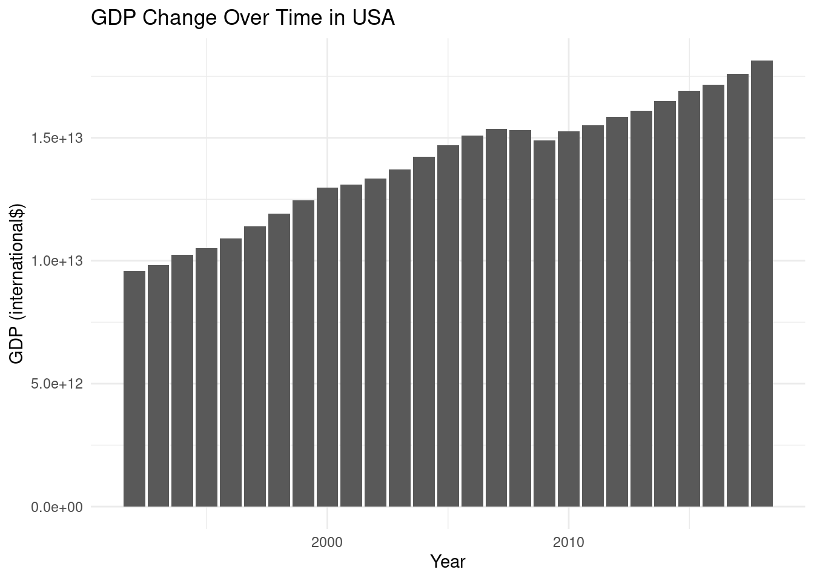
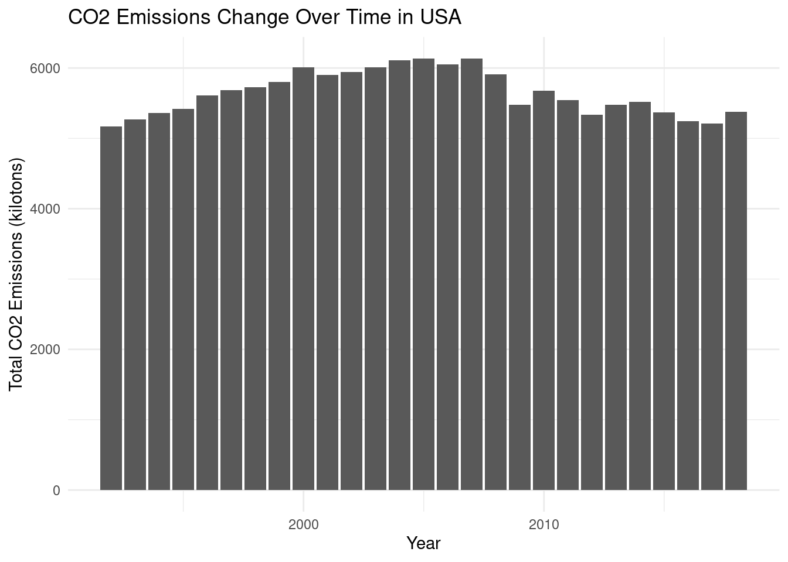
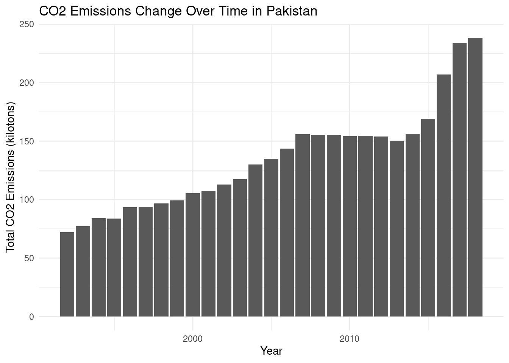
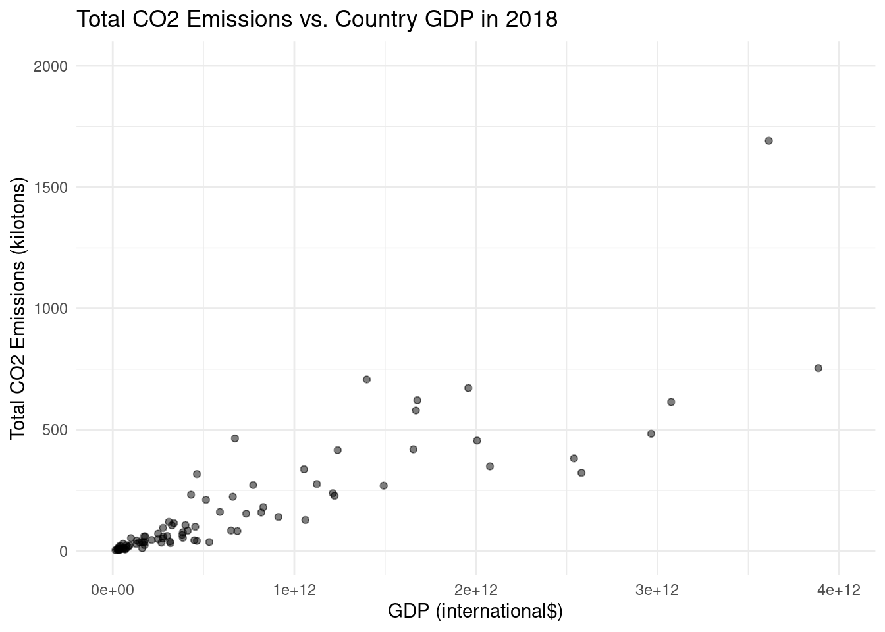

It’s Getting Hot in Here
Analysis of Global CO2 Emissions Over Time
Topic and Motivation
Climate change is the biggest challenge facing our generation, with increased global CO2 emissions being one of the leading contributors to this issue.
In order to combat the effects of climate change, we must first understand the data behind it.
Research questions:
What is the relationship between GDP and CO2 emissions for developing versus developed countries in 2018?
Is the true proportion of countries with a CO2 emission greater than the US in the twentieth century different from those in the twenty-first century?
The Data
Created to show how emissions are changing in each country
The Our World in Data team created the original dataset on behalf of the Our World in Data project
The instances that comprise the dataset represent countries (per year from 1992 to 2018) with 2484 instances total.
The observations (rows) are countries per year and the attributes (columns) are various emission data for each country per year
The current dataset we will use is a subset of the original dataset, with all the tonnes units converted into kilotons and the variable names altered
Highlights from the EDA
Rows: 2484 Columns: 20
── Column specification ────────────────────────────────────────────────────────
Delimiter: ","
chr (2): Country.Name, Country.Code
dbl (18): Year, Country.GDP, Country.Population, Emissions.Production.CH4, E...
ℹ Use `spec()` to retrieve the full column specification for this data.
ℹ Specify the column types or set `show_col_types = FALSE` to quiet this message.



Warning: Removed 3 rows containing missing values (`geom_point()`).
Warning: Removed 4 rows containing missing values (`geom_point()`).
Inference, Modeling, and Analysis
Research question: What is the association between GDP and CO2 emissions for developing versus developed countries in 2018?
# A tibble: 2 × 5
term estimate std.error statistic p.value
<chr> <dbl> <dbl> <dbl> <dbl>
1 (Intercept) -0.514 0.226 -2.27 0.0230
2 Emissions.Production.CO2.Total -0.0000569 0.000192 -0.296 0.767 \[ log(\frac{p}{1-p})=-5.14 \times 10^{-1} +(- 5.69 \times 10^{-5} \times total~CO2~emissions) \] The intercept can be interpreted as the log odds of a country being “developed” if total CO2 emissions is 0, which is \(-5.14 \times 10^{-1}\). However, because we do not use or think in terms of log odds, we can further interpret this intercept by evaluating p. The odds, \(\frac {p}{1-p}\), of a country being “developed” if total CO2 emissions is 0 is \(e ^ {-5.14 \times 10 ^ {-1}}\) which is 0.598, where p represents the probability that the country is developed. Thus, given that total CO2 emissions is 0, the probability a country is developed is \(e ^ {-5.14 \times 10 ^ {-1}} - e ^ {-5.14 \times 10 ^{-1}} p\) or 0.37.
Conclusions and Future Work
We find that there is indeed an increase in CO2 emissions between the two centuries
For developing countries, a near-exponential increase
For developed countries, a linear increase.
This requires transitioning to renewable energy sources, improving energy efficiency, reducing deforestation, and promoting reforestation and eco-repair.
Not all 195 countries, nor only 1992 - 2018.
In the future, we hope to explore a larger time frame, and examine more features than just GDP, such as population, industrialization, number of cities, etc.
Developing or developed, every nation has a duty to help protect and preserve the planet in which we all reside.